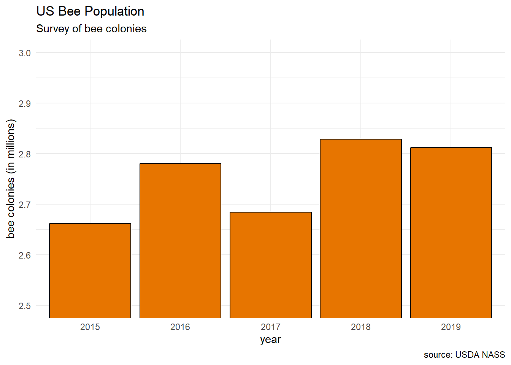

library("sf")
library("tidyverse")
bee_data <- readr::read_csv("bee_data.csv")
states_shp <- readr::read_rds("us_states_shp.rds")
color_1 <- "#E77500"
color_2 <- "#121212"Interactive Dashboards
In this blog post, I want to outline my upcoming Princeton Wintersession workshop Interactive Dashboards for Collaborative Communication. In this workshop, we will explore the new technology called Quarto dashboards. In this exploration, I have chosen a different data set per my interest, but much of the credit for the design of this workshop goes to the folks at Posit and other data scientists who have already created wonderful tutorials (see Additional Resources).
Dashboards
- Examples from Posit
Why R?
Why Quarto?
Posit Cloud
Case Study: Bees!
Concern for Bee Populations

Data Source
Our data come from the Quick Stats at USDA NASS (United States Department of Agriculture National Agricultural Statistics Service). Users can access a subset of the data through dropdown menus. For replicability, I list my selections below:
Commodity:
- Program: SURVEY
- Sector: ANIMALS & PRODUCTS
- Group: SPECIALTY
- Commodity: HONEY
- Category: INVENTORY
- Data item: HONEY, BEE COLONIES - INVENTORY, MEASURED IN COLONIES
Location:
- Geographic Level: STATE
- State: [leave unselected for all states]
Time:
- Year: [selected 2014 to 2024 to obtain about a decade of data]
- Period Type: ANNUAL (note: the “annual” measurements were done by each state, while other granularity might not be available for all states)
- Period: MARKETING YEAR
Bar Charts

bee_data |>
group_by(Year) |>
mutate(total_colonies = sum(Value)) |>
ungroup() |>
select(Year, total_colonies) |>
distinct() |>
mutate(num_colonies = total_colonies / 1e6) |>
ggplot(aes(x = factor(Year), y = num_colonies)) +
geom_bar(color = "#121212", fill = "#E77500",
stat = "identity") +
coord_cartesian(ylim = c(2.5,3.0)) +
labs(title = "US Bee Population",
subtitle = "Survey of bee colonies",
# caption = "source: USDA NASS",
x = "year",
y = "bee colonies (in millions)") +
theme_minimal()bee_data |>
filter(Year >= 2015 & Year <= 2019) |>
filter(State %in% c("CALIFORNIA", "NEW JERSEY")) |>
ggplot(aes(x = Year, y = Value)) +
facet_wrap(vars(State), scales = "free_y") +
geom_bar(stat = "identity")Maps
states_shp |>
mutate(this_selection = ifelse(NAME == "New Jersey",
"focus", "other states")) |>
ggplot() +
geom_sf(aes(fill = this_selection)) +
labs(title = "State Selection",
subtitle = "toward a Dashboard card",
caption = "Princeton Wintersession") +
scale_fill_manual(values = c(color_1, "gray80")) +
theme_minimal()Setup (YAML)
In a Posit Cloud session, create a new Quarto document, and then change the format to dashboard.
---
title: "My Dashboard"
format: dashboard
---
# notebook content goes here...Additional Resources
For this workshop, I followed the materials presented by Mine Cetinkaya-Rundel and Posit
Folks that are interested in learning more about Quarto Dashboards can refer to resources such as the following:
How to Automate your Reporting by Isabella Velasquez
Easy Dashboards by The GRAPH Courses
Interactive Infographic using DisplayR by Melisaa Van Bussel
Quarto Dashboards by Charles Teague
Quarto Dashboards by Isabella Velasquez
How to Style your Quarto docs without HTML & CSS by Albert Rapp
Beyond Dashboards by Sean Nguyen